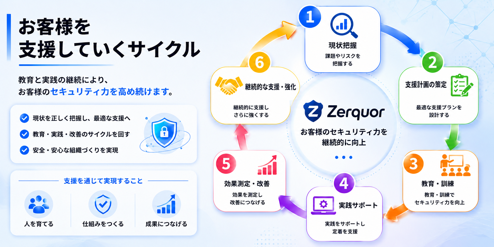

現場経験を持つ講師が支援
セキュリティエンジニア、 コンサルタント、 クラウドエンジニア、 IT講師として培った経験を活かし、 実践的な支援を提供します。
技術・教育・実践をつなぎ、 中小企業のセキュリティ体制づくりを支援します。
セキュリティエンジニア、 コンサルタント、 クラウドエンジニア、 IT講師として培った経験を活かし、 実践的な支援を提供します。
研修の実施だけでなく、 社内への定着や運用改善まで支援し、 実際に活用できる仕組みづくりを目指します。
「何から始めればよいか分からない」 という企業向けに、 現状把握から段階的に支援します。
情報処理安全確保支援士や ネットワークスペシャリストをはじめ、 AI・クラウド分野も継続的に学習し、 最新の知見を提供します。
セキュリティ対策が必要だと分かっていても、 中小企業では「何から始めるか」が曖昧になりがちです。
現状を確認し、今すぐ必要な対策と後回しにできる対策を整理します。
最初から大きな投資をせず、教育・ルール・相談体制から小さく始めます。
セキュリティチェックや取引先からの確認に、説明できる状態を整えます。
現状把握から研修、ルール整備、継続相談まで、段階的に支援します。
できていること・不足していること・優先順位を整理します。
偽メール、情報漏えい、事故時の報告などを分かりやすく伝えます。
アカウント管理、クラウド共有、退職者対応などのルールを整えます。
専任担当者を置くのが難しい企業向けに、継続的な相談先を提供します。
セキュリティ、クラウド、IT教育の現場経験を活かし、 中小企業のセキュリティ内製化を支援します。
製薬・通信・運輸業界などの大手企業向け案件に参画し、 セキュリティ体制強化とリスク低減を支援。
100名以上が利用するセキュリティ監視基盤の安定運用、 インフラ改善、品質向上を支援。
GuardDuty、Security Hub、AWS WAFなどを活用し、 安全性と運用効率を両立した環境構築を支援。
新入社員研修やSecurity+研修を担当し、 実務で活躍できるIT人材の育成を支援。
現状把握から教育・実践・改善までを継続し、セキュリティ力を高め続けます。

Zennで公開している記事を自動表示しています。